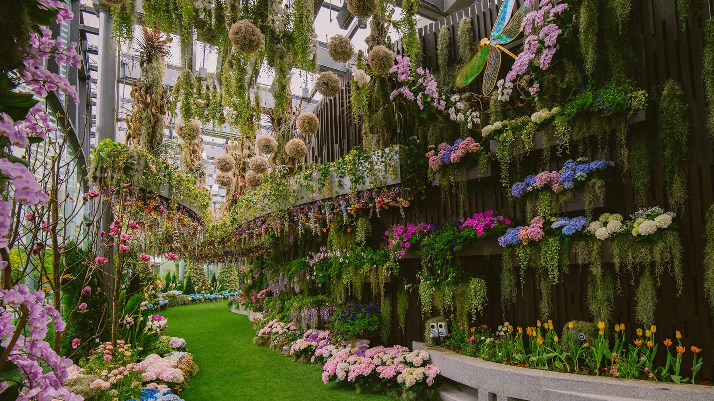
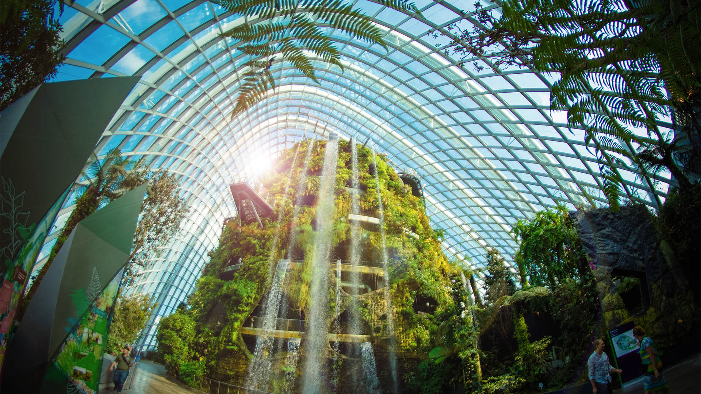
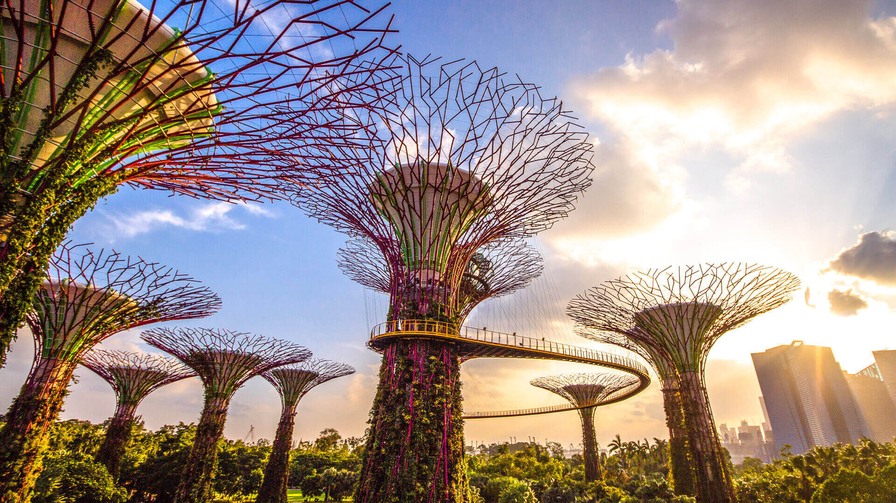

The Garden Story
Opened on 29 June 2012
In January 2006, an international master plan design competition was launched to seek world-class design ideas for Gardens by the Bay. It drew more than 70 entries submitted by 170 firms, from over 24 countries, including 35 from Singapore.
Gardens by the Bay broke ground in November 2007, signalling the commencement of the Gardens’ development. Subsequently, development of Bay East Garden also commenced. In August 2010, Bay East underwent reinstatement works and was open to the public in October 2011.
Flower Dome
Enter a world of perpetual spring with the ever changing floral displays. There are nine invigorating gardens featuring flora from the world's cool-dry regions

Floral Fantasy
Floral Fantasy promises an escape that's truly out of this world. Embark on an enchanting journey through four whimsical gardens enlivened by a creative amalgamation of foilage and flowers

Cloud Forest
Home to one of the world’s tallest indoor waterfalls and a lush mountain clad with plants from around the world, Cloud Forest rewards the curious and adventurous. Go on a fascinating journey of discovery and get up close with some of the world’s most exotic plant species as you stroll along its unique aerial walkways.

OCBC Skyway
At the OCBC Skyway, you can capture a glorious panorama shot in the company of 12 gigantic vertical gardens

How to get there?
You can get to Gardens By the Bay by
- Public Transport
- Private Transport
- Shuttle Service
Public Transport
Via The Circle Line Or Downtown Line
- Alight at Bayfront MRT Station (CE1/DT16)
- Take Exit B and follow the underground linkway
- Exit and cross the Dragonfly Bridge or Meadow Bridge into Gardens by the Bay
Via The East-West Line
- Alight at Tanjong Pagar MRT Station (EW15)
- Take Exit C and head towards bus stop no. 03223 located at International Plaza, Anson Road
- Hop onto bus 400 and alight at bus stop no. 03371 along Marina Gardens Drive
Private Transport
Bayfront Plaza carpark
- Enter Marina Boulevard and enter Bayfront Plaza Car Park
Main Entrance / The Meadow / Satay by the Bay carparks
- Enter Marina Gardens Drive
Shuttle Service
Daily 9.00am - 9.00pm
- Runs at 10 minute intervals
- Loop service between: Bayfront Plaza (temporarily relocated to beside Floral Fantasy entrance) ←→ Active Garden ←→ Flower Dome
- Shuttle Service fee at $3 for one 2-way ride (Adult / Child)
- Free Shuttle Service for every passenger using a wheelchair (ambulant or non-ambulant). Caregivers are required to purchase a ticket.
- Tickets can be purchased online or via the Gardens By The Bay Mobile App